Sistema de Gestión Administrativa para Talleres Artesanales
Luis Fernando González Miguel
Luis Daniel Martínez Miguel
Docente: Bernardo Roberto Cruz Hernández
El proyecto se sitúa en talleres ubicados en comunidades del estado de Oaxaca, particularmente en Teotitlán del Valle, reconocida nacional e internacionalmente por la elaboración artesanal de tapetes de lana mediante técnicas tradicionales heredadas por generaciones.
Estos talleres operan como negocios familiares, donde la administración se realiza de manera manual:
De los talleres en la región operan como pequeñas unidades familiares sin sistematización administrativa.
No existe inversión en herramientas digitales, lo que se traduce en pérdida silenciosa de información financiera.
No existen herramientas para gestionar el inventario de piezas terminadas ni rastrear su ubicación física (taller, consignación o venta directa).
Los artesanos no registran costos variables ni horas-hombre. El precio se asigna empíricamente, lo que subvalúa su trabajo.
El mercado globalizado incrementa el riesgo de plagio. No hay un mecanismo digital, confiable y de bajo costo para certificar la autenticidad.
«La producción artesanal es un pilar de la economía y la identidad cultural de Oaxaca, pero la administración manual genera pérdida de información, mal cálculo de precios y vulnerabilidad ante imitaciones industriales.»
Desarrollar un sistema de información para la gestión administrativa de talleres artesanales, que permita el control digital de inventarios, el cálculo automatizado de costos de producción y la generación de certificados de autenticidad digitales mediante códigos QR, con el fin de proteger el valor comercial y cultural de las piezas.
Scrum es un marco de trabajo ágil que organiza el desarrollo en iteraciones cortas llamadas Sprints. A diferencia del modelo en cascada, no asume que los requisitos se conocen al inicio del proyecto.
Se eligió porque permite:
Los aspectos del proceso son visibles para todos los involucrados.
Los artefactos y el progreso se inspeccionan con frecuencia.
El proceso se ajusta cuando se detectan desviaciones.
El ciclo iterativo que recorre cada Sprint del proyecto.
Lista priorizada de Historias de Usuario que captura todo lo que el producto necesita hacer.
Selección de HU del backlog para la iteración y definición del Sprint Backlog.
Construcción del incremento con Daily Scrum diario; el alcance no se modifica durante el Sprint.
Inspección del incremento terminado y ajuste del Product Backlog si surge nueva información.
Reflexión sobre proceso, herramientas y relaciones para mejorar la siguiente iteración.
Ciclo iterativo: tras la Retrospective inicia un nuevo Sprint Planning. El proceso se repite hasta agotar el Product Backlog.
El sistema se construyó incrementalmente, entregando módulos funcionales en cada sprint.
Lenguaje interpretado y asíncrono, en cliente y servidor.
Entorno V8 con framework minimalista para APIs REST.
Biblioteca para construir interfaces basadas en componentes.
Gestor relacional robusto con cumplimiento de estándares SQL.
Generación programática de certificados de autenticidad PDF.
Genera el código QR único por pieza, sin dependencias externas.
Lo que el sistema debe hacer y bajo qué condiciones de calidad.
Lo que el sistema debe hacer.
Cómo y bajo qué condiciones debe funcionar.
17 historias en 6 iteraciones, priorizadas según valor de negocio.
| HU | Nombre | Iter. | Prioridad | Pts |
|---|---|---|---|---|
| 01 | Acceso al sistema (Login) | 1 | Alta | 2 |
| 02 | Agregar nuevos elementos a catálogos | 1 | Media | 2 |
| 03 | Editar elementos de catálogos | 1 | Baja | 2 |
| 04 | Eliminar elementos de catálogos | 1 | Baja | 3 |
| 05 | Registro de entrada de materia prima y proveedor | 1 | Alta | 3 |
| 06 | Registro de nueva artesanía (Inventario) | 2 | Alta | 5 |
| 07 | Subir fotografías de la pieza | 2 | Alta | 3 |
| 08 | Cálculo de precio sugerido (Costeo) | 3 | Alta | 8 |
| 09 | Asignación de precio de venta final | 3 | Media | 2 |
| 10 | Generación de código QR único | 4 | Alta | 5 |
| 11 | Ensamblado de certificado PDF | 4 | Alta | 5 |
| 12 | Verificación pública (Escaneo cliente) | 4 | Alta | 8 |
| 13 | Registro de salida a consignación | 5 | Alta | 3 |
| 14 | Registro de venta final | 5 | Alta | 3 |
| 15 | Actualización automática de inventario | 5 | Alta | 5 |
| 16 | Generación de reporte de ventas | 6 | Media | 5 |
| 17 | Respaldo de base de datos | 6 | Baja | 2 |
Las historias que vamos a ver mapeadas a las pantallas del maquetado.
«Como artesano, quiero acceder al sistema mediante mi correo y contraseña, para asegurar que solo personal autorizado modifique el inventario.»
«Quiero registrar una nueva pieza seleccionando material, técnica y nombre, para mantener un catálogo digital organizado.»
«Quiero que el sistema sume el costo de insumos y multiplique mis horas de trabajo por mi tarifa, para sugerirme un precio justo.»
«Quiero un código QR único y un PDF con foto y datos de la obra, para entregarlo al cliente como garantía de originalidad.»
«Como artesano, quiero registrar la venta de una pieza y el monto final cobrado, para tener un registro histórico de mis ingresos reales.»
«Como artesano, quiero generar reportes de mis ventas por mes y año, para conocer mis ingresos reales y mis piezas más vendidas.»
Acciones que cada tipo de actor puede realizar en ArtesaTrace.
El cliente accede sin credenciales; solo lectura pública.
Vista UML del sistema agrupada por paquetes funcionales y sus actores.
Las líneas continuas indican asociación directa (el actor ejecuta el caso de uso). La línea punteada del Comprador → Consulta Pública denota un acceso de solo lectura, sin autenticación.
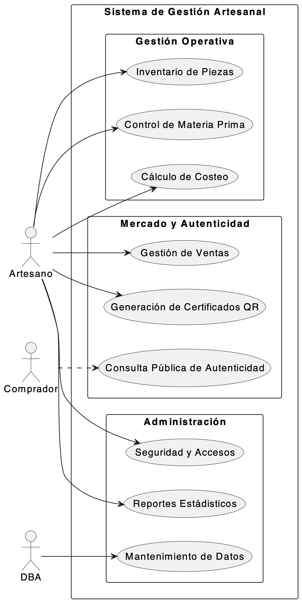
Distribución de las 6 iteraciones de Scrum a lo largo del semestre.
Modelo conceptual: cómo se relacionan las entidades del dominio del taller.
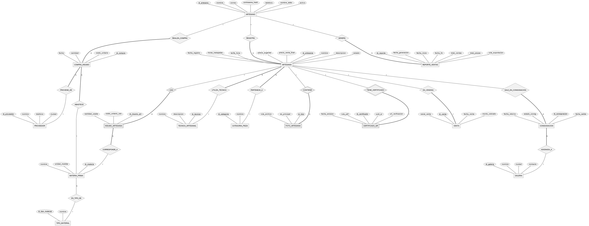
Estructura del sistema en clases con atributos, métodos y relaciones de asociación.
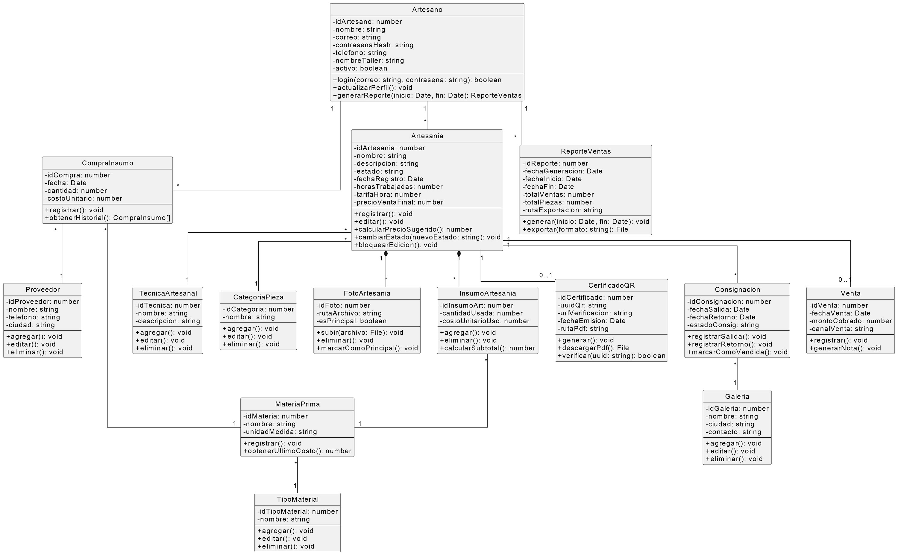
Todas las tablas con sus tipos, PK y FK — acumulado de las 6 iteraciones.
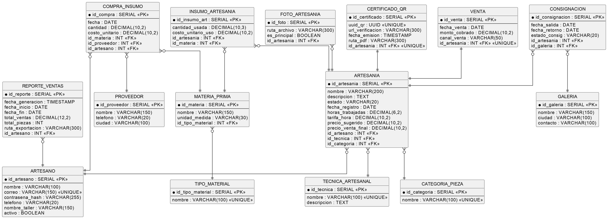
Bases del proyecto: autenticación de usuarios, catálogos maestros (técnicas, proveedores, categorías) y registro de entrada de materia prima vinculada a proveedor.
El sistema valida credenciales del artesano antes de permitir el acceso a datos financieros y de inventario.
Usuario: Artesano / Administrador
Prioridad: Alta · 2 puntos
Iteración: 1 (Fundamentos)
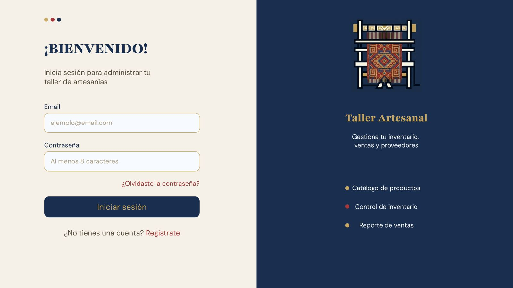
Pantalla con tarjetas que muestran cada técnica artesanal con su nombre, descripción y acciones de editar y eliminar.
HU-02: Agregar nuevos elementos (Media · 2 pts)
HU-03: Editar elementos (Baja · 2 pts)
HU-04: Eliminar elementos (Baja · 3 pts)
Iteración: 1 (Fundamentos)
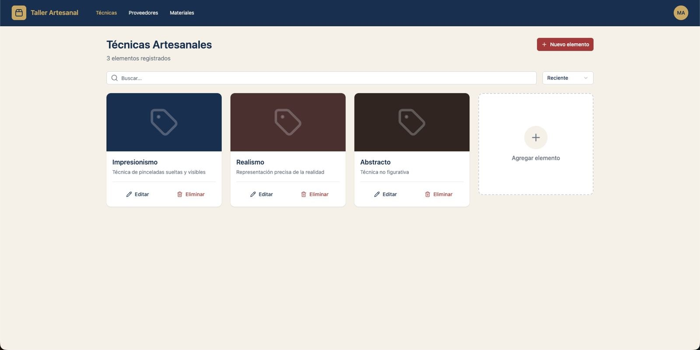
Diálogo que aparece al presionar «Nuevo elemento» en el catálogo de técnicas. El artesano captura solo el nombre y una descripción opcional.
Usuario: Artesano
Prioridad: Media · 2 puntos
Iteración: 1 (Fundamentos)
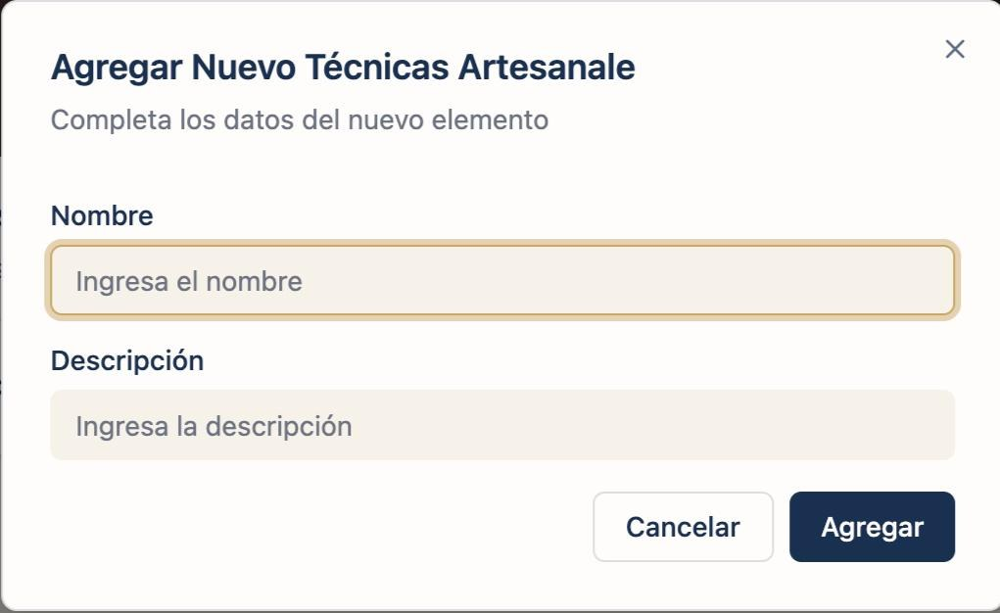
El catálogo de proveedores reutiliza el patrón del catálogo de técnicas: tarjetas con nombre, descripción y acciones de gestión.
HU-02: Agregar proveedor (Media · 2 pts)
HU-03: Editar proveedor (Baja · 2 pts)
HU-04: Eliminar proveedor (Baja · 3 pts)
Iteración: 1 (Fundamentos)
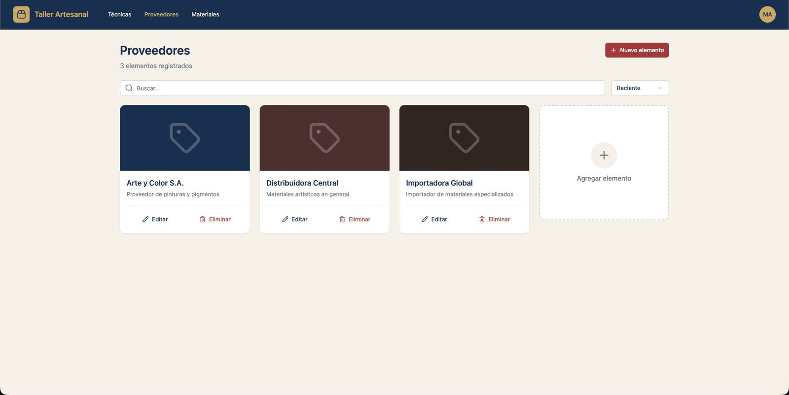
Reutilización del componente de diálogo para mantener consistencia en la experiencia de usuario al alimentar cualquier catálogo del sistema.
Usuario: Artesano
Prioridad: Media · 2 puntos
Iteración: 1 (Fundamentos)
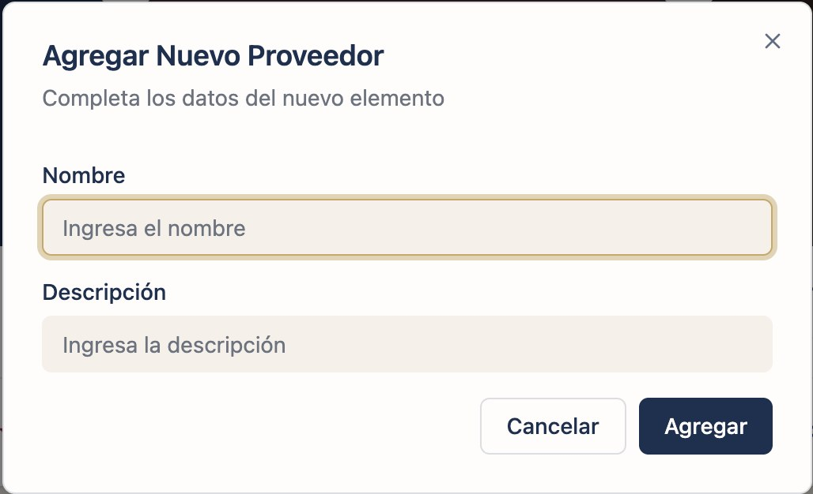
Vista que lista cada material con su unidad, costo unitario, cantidad en stock y proveedor asociado, con filtros por unidad y orden por fecha de ingreso.
Usuario: Artesano
Prioridad: Alta · 3 puntos
Iteración: 1 (Fundamentos)
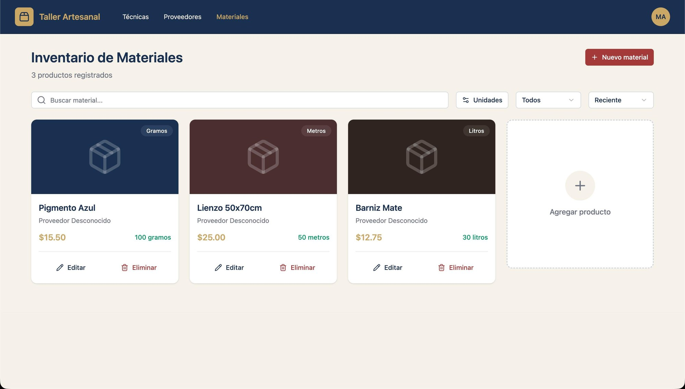
El formulario solicita nombre del material, costo unitario, cantidad ingresada, proveedor (del catálogo) y unidad de medida. Esta información alimenta luego el costeo de cada pieza.
Usuario: Artesano
Prioridad: Alta · 3 puntos
Iteración: 1 (Fundamentos)
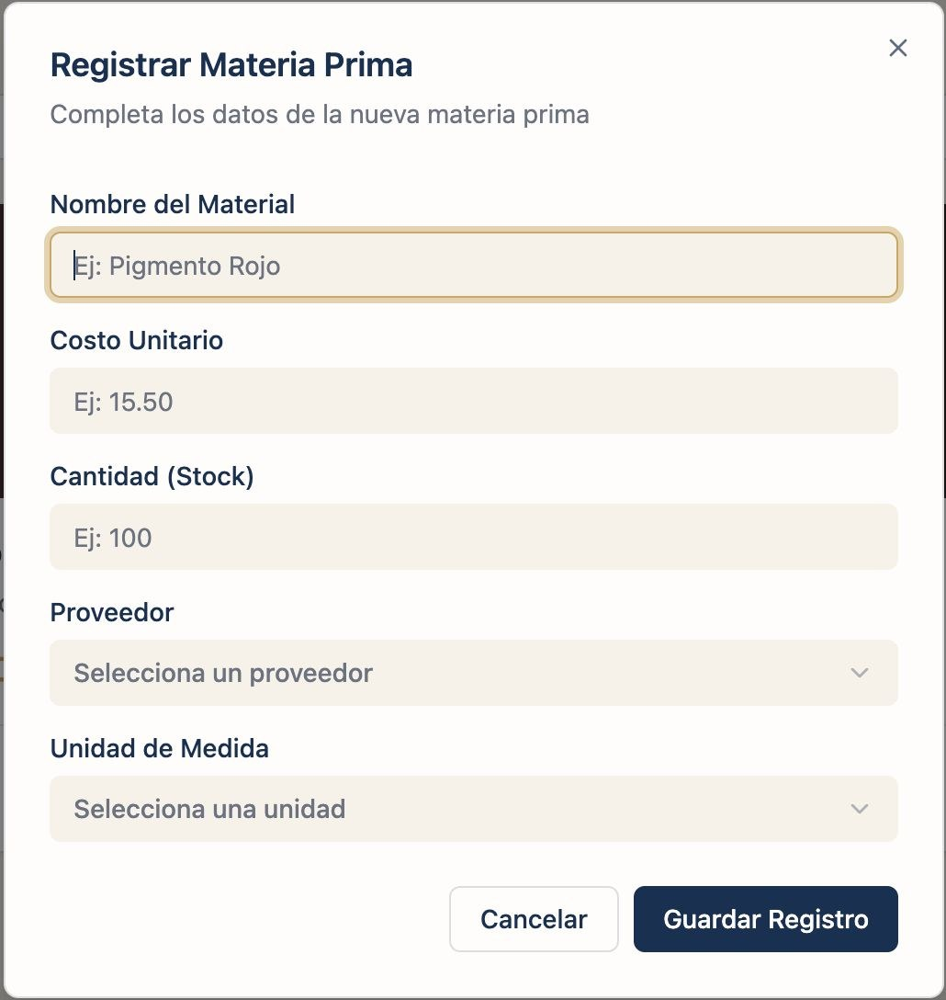
Registro de nuevas artesanías con material, técnica, descripción y stock; carga de fotografías de cada pieza con vista de galería y miniaturas.
Vista del catálogo donde el artesano da de alta cada pieza seleccionando material, técnica y nombre.
Usuario: Artesano
Prioridad: Alta · 5 puntos
Iteración: 2 (Inventario)
Relacionada con: HU-07 (fotografías)
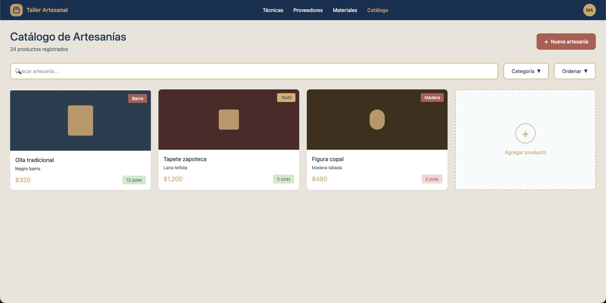
El artesano captura nombre, categoría, técnica, descripción y stock inicial; en paralelo arrastra o selecciona las fotografías de la pieza, con una marcada como principal.
HU-06: Registro de nueva artesanía (5 pts · Alta)
HU-07: Subir fotografías de la pieza (3 pts · Alta)
Iteración: 2 (Inventario)
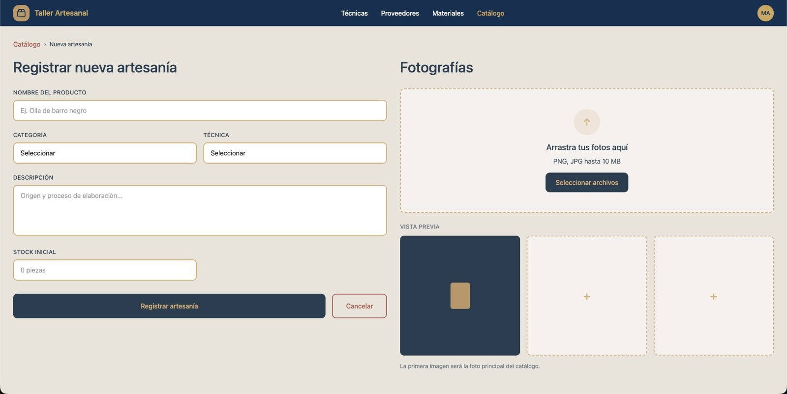
Vista de detalle donde la foto principal ocupa el espacio destacado y las miniaturas permiten cambiar la vista. Acompaña la ficha técnica con material, técnica, dimensiones y peso.
Usuario: Artesano
Prioridad: Alta · 3 puntos
Iteración: 2 (Inventario)
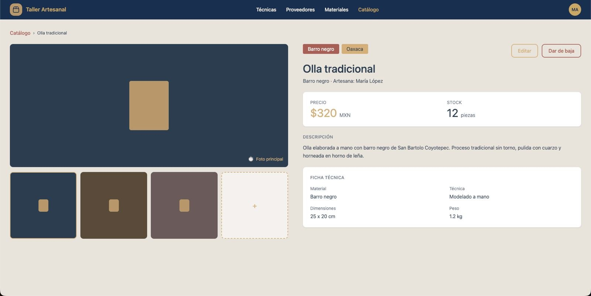
La historia más compleja del proyecto: cálculo automático del precio sugerido sumando insumos y mano de obra, con margen de ganancia ajustable y asignación de precio final por el artesano.
El sistema suma costos de insumos y multiplica las horas de trabajo por la tarifa, sugiriendo un precio de venta justo en tiempo real.
Usuario: Artesano
Prioridad: Alta · 8 puntos · Riesgo Alto
Iteración: 3 (Costeo)
Relacionada con: HU-09 (precio final)
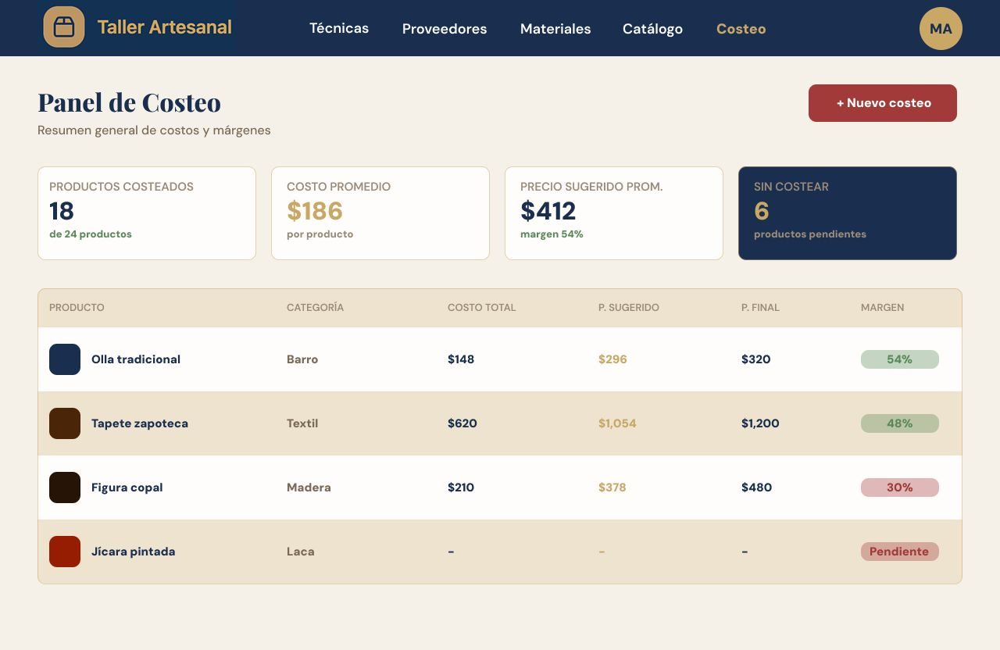
El artesano agrega insumos con cantidad y unidad. El sistema calcula subtotales, suma materiales y mano de obra, aplica el margen de ganancia y sugiere un precio que el artesano puede ajustar.
HU-08: Cálculo de precio sugerido (8 pts · Alta)
HU-09: Asignación de precio de venta final (2 pts · Media)
Iteración: 3 (Costeo)
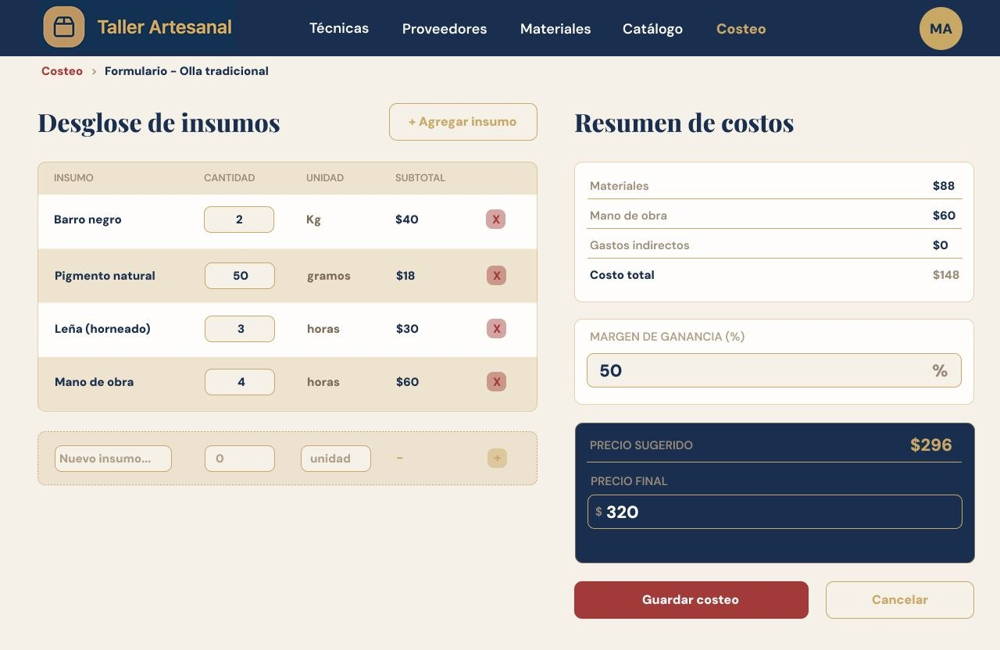
Generación de código QR único por pieza, ensamblado del certificado de autenticidad en PDF y vista pública de verificación accesible sin sesión para el cliente final.
El sistema asigna un QR único a cada pieza y ensambla un PDF con los datos, foto y código de verificación.
HU-10: Generación de QR único (5 pts)
HU-11: Ensamblado de certificado PDF (5 pts)
Iteración: 4 (Certificación)
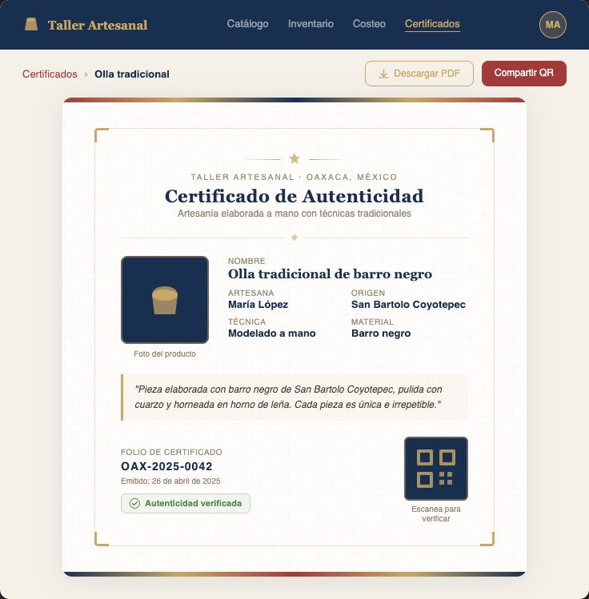
Al escanear el código QR de una pieza, el cliente accede a esta ficha pública con la información de autenticidad, foto y folio del certificado.
Usuario: Cliente final (público)
Prioridad: Alta · 8 puntos
Iteración: 4 (Certificación)
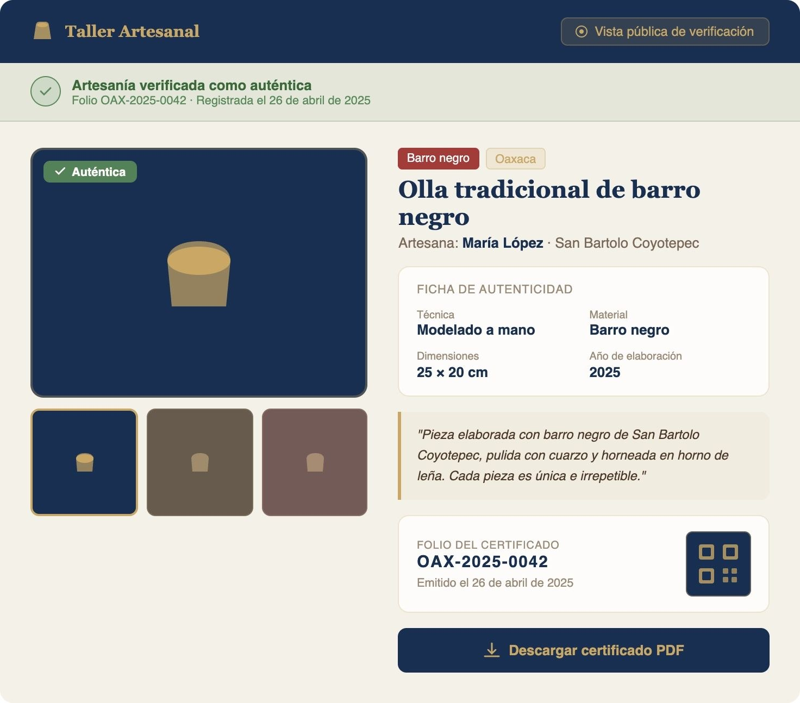
Registro de salida de piezas a consignación, captura de ventas con monto cobrado y canal, y actualización automática del estado del inventario al concretarse cada operación.
El artesano registra la venta indicando canal, monto cobrado y forma de pago. El sistema calcula la ganancia real.
Usuario: Artesano
Prioridad: Alta · 3 puntos
Iteración: 5 (Ventas)
Dispara: HU-15 (actualización inventario)
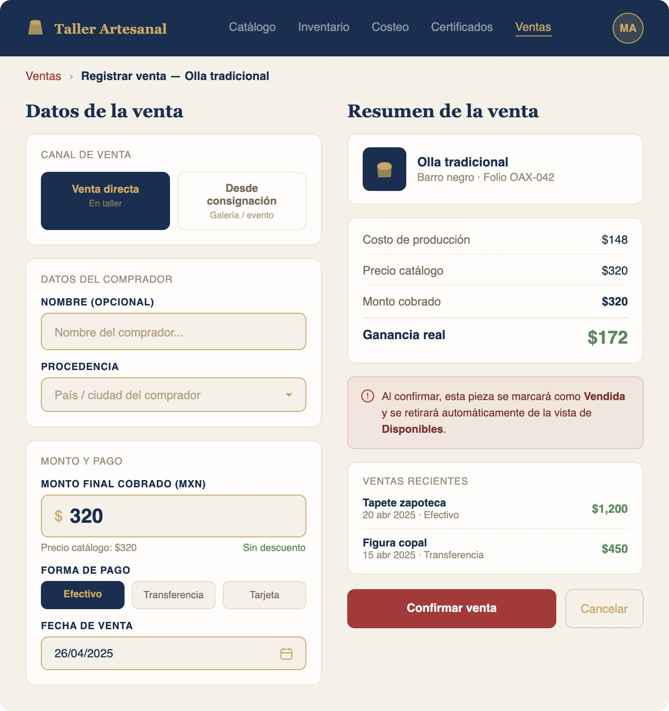
El artesano selecciona la pieza, captura la galería receptora, fecha de salida y notas. La pieza se oculta de «Disponibles» hasta su venta o devolución.
Usuario: Artesano
Prioridad: Alta · 3 puntos
Iteración: 5 (Ventas)
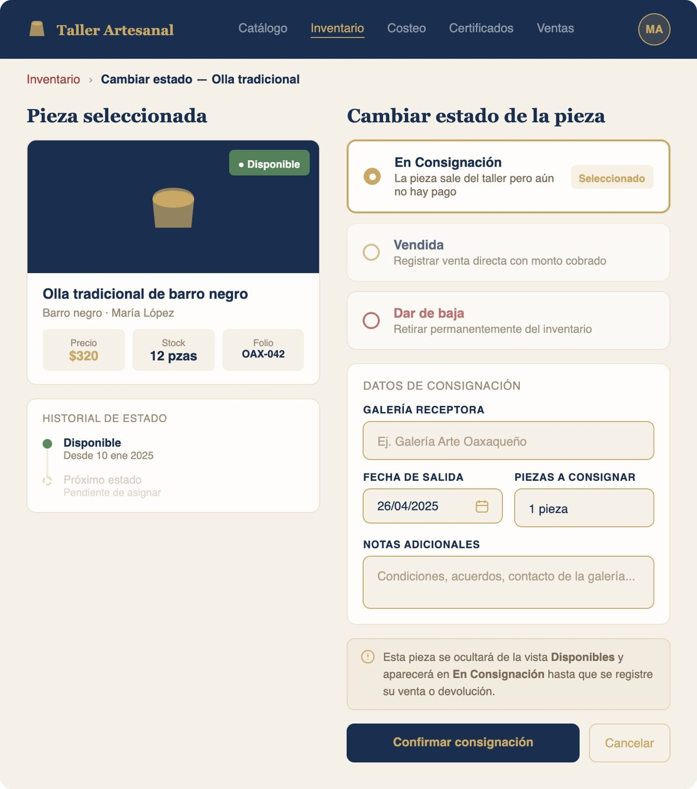
El inventario se organiza en pestañas: Disponibles, En Consignación, Vendidas y Dadas de baja. El sistema mueve automáticamente las piezas al registrar consignaciones o ventas.
Usuario: Artesano
Prioridad: Alta · 5 puntos
Iteración: 5 (Ventas)
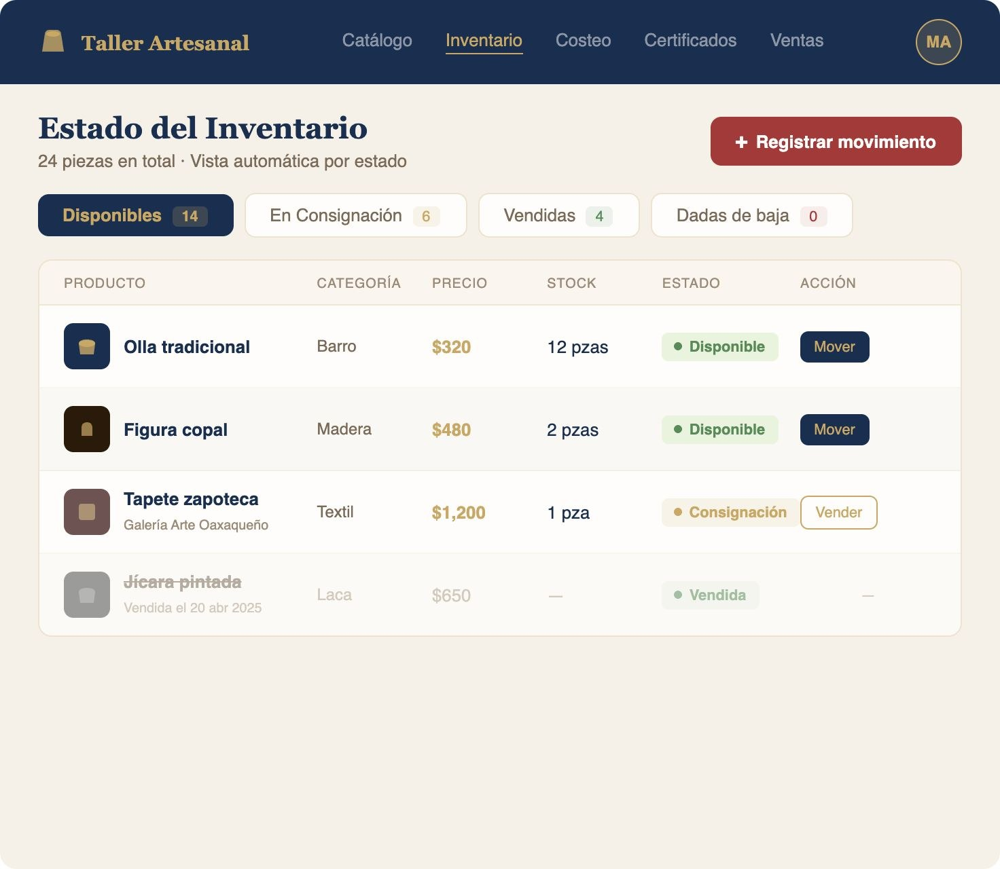
Cierre del ciclo de desarrollo: generación de reportes de ventas con métricas, gráficos y ranking de piezas más vendidas, y módulo de respaldo de la base de datos en formato SQL.
El sistema agrega los datos del periodo y los presenta en métricas, gráfico de ingresos por semana, ranking de piezas más vendidas y detalle exportable.
Usuario: Artesano / Administrador
Prioridad: Media · 5 puntos
Iteración: 6 (Reportes)
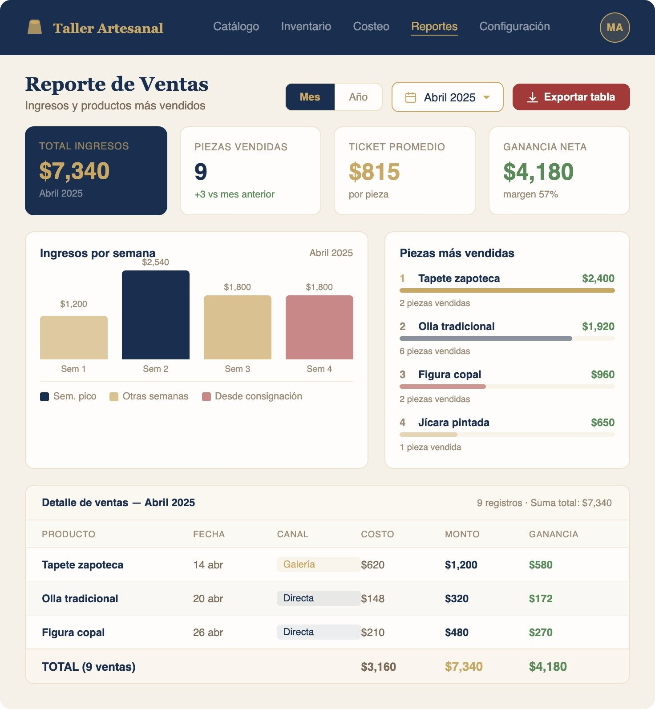
El sistema permite descargar un respaldo completo en formato SQL con la estructura y los datos del sistema, e historial de respaldos anteriores.
Usuario: Administrador
Prioridad: Baja · 2 puntos
Iteración: 6 (Reportes)
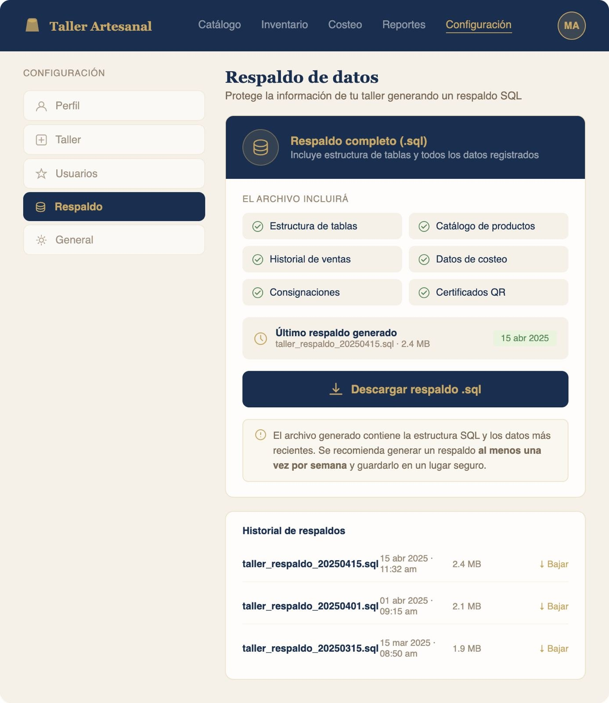
El desarrollo de ArtesaTrace confirmó que un análisis riguroso del dominio y una metodología bien aplicada son la base de cualquier propuesta de sistema de información sólida. Trabajar con Scrum en seis iteraciones permitió avanzar de forma ordenada, entregar resultados concretos en cada etapa y mantener el diseño alineado con las necesidades reales del taller artesanal. El modelado de datos, los diagramas UML y los mockups elaborados demuestran que el sistema propuesto es técnicamente viable y da respuesta directa a los tres problemas identificados: la falta de control de inventario, la dificultad para calcular costos de producción y la ausencia de certificados de autenticidad digitales.
Este proyecto permitió aplicar en un caso real las etapas centrales del análisis y diseño de software: levantar requisitos, traducirlos en historias de usuario y casos de uso, diseñar una base de datos relacional y materializar las soluciones en interfaces concretas mediante mockups. También se aprendió a gestionar un proyecto de forma iterativa con Scrum, lo que implicó planear, priorizar y documentar el trabajo de manera estructurada. En conjunto, el proyecto dejó la experiencia de que la ingeniería de software tiene un impacto directo en problemas reales cuando se desarrolla con atención al contexto del usuario final.
Bibliografía consultada durante la investigación, diseño y desarrollo de ArtesaTrace.
Luis Fernando González Miguel · Luis Daniel Martínez Miguel
Fundamentos de Ingeniería de Software · Grupo 5SU · Abril 2026